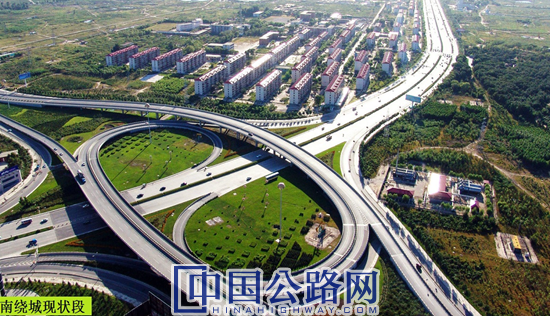

微官网
微官网
2019-02-26 中国高速公路网—21世纪公路网
云南云岭工程造价咨询有限公司负责在昆明市东南片区建立快速交通体系，以带动片区及全市经济发展。本项目作为一个约900亿元项目中的子项目，总投资99.14亿元，建设里程65.48公里，包括道路、桥梁、隧道、城市地下管廊等。云南云岭工程造价咨询有限公司负责BIM技术咨询应用，利用 ProjectWise（项目协同管理平台） 的互连数据环境来协调数据传输和共享的产业化和自动化进程。

项目方利用基于 ProjectWise（项目协同管理平台）协作和管理功能的互连数据环境，结合其他 Bentley 应用程序的工程和设计功能，开发出了一种支持业主的综合BIM 方法。这一过程旨在确保信息得到共享，也建立了业主运营商未来决策所需的数字 DNA。项目合作期20年，建设期参建单位25家，因此技术支持的强大 BIM 流程对于成功至关重要。
LumenRT（实时可视化软件）的可视化功能增加了模型的外观表现力，项目团队可以向项目实施者和管理者提供三维效果，从而更好地了解施工进度，方案可视化效率提升了 70%。
此外，项目方支持创建了该项目的数字孪生模型，覆盖范围达 20 平方公里，模型完整性达到90%，设计图文3650份，实现了流程标准、成本信息和数百份项目监理数据编号的管理。
通过使用 BIM 方法实现项目执行和交付产业化，项目方获得了极为可观的投资回报。采用 Bentley BIM模式相较传统模式，施工单位报审报量人员减少4人，传统模式需要1周完成的工作，现仅需花费一小时完成核准和审批工作，前期报批材料缺失性减少40%，施工现场信息的完整性提升 30% ，设计效率和三维反馈效率提升 25%，设计出图错误减少 60%。这些巨大的收益也得到了政府的认同，在数次的汇报工作中，基于Bentley提供的BIM数据得到政府一致赞赏，并发文在省内推广其他路桥项目BIM技术应用。
云南云岭工程造价咨询有限公司已经看到了项目交付产业化所带来的好处，通过创建强大的互连数据环境，数字孪生模型不仅会为改善施工项目奠定基础，而且会成为昆明市改善数字城市管理的关键因素。
云南云岭工程造价咨询有限公司副主任李超表示：“利用Bentley的 ProjectWise（项目协同管理平台）实现高效率的协同工作，项目协同度提升25%，项目团队能够访问现场信息，从而将信息完整性提高了 30%。”